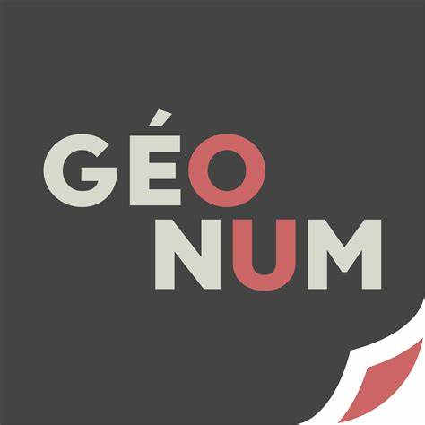

Accées a la justice
Point de justice
Cour d'appel
Tribunale judiciaire
Prudhomme
_
x
head-info
Description générale le le type de point de juste,
info
stat
texte
information detailler sur le point de justice : adresse numèros le gérant etc...
stat
information statistique agrégé au niveaux des commune ou autre sur l'accessibilité et les besoin ou non en point de justice

OpenLayers Map / GéoNum 2025
By :
Quesnel Corentin
RIDJALI hassani